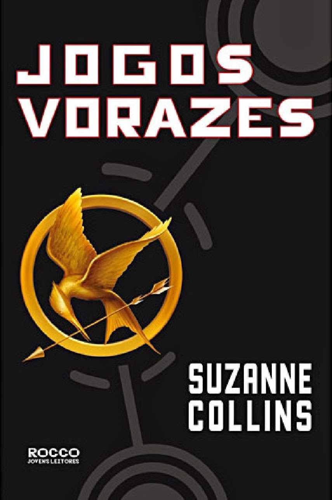
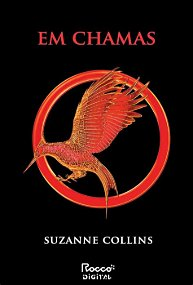

"Katniss escuta os tiros de canhão
enquanto raspa o sangue
seco do garoto do distrio 9.
Na abertura dos Jogos Vorazes, a organização não recolhe os corpos dos
combatentes caídos e dá tiros de canhão até o fnal. Cada tiro, um morto.
Onze tiros no primeiro dia. Treze jovens restaram, entre eles, Katniss.
Para quem os tiros serão no dia seguinte?...

"As fagulhas se acendem.
As chamas se espalham.
E a capital quer vingança.
Depois da improvável e inusitada vitória de Katniss Everdeen e Peeta Melark
nos últimos Jogos Vorazes, algo parece ter mudado para sempre em Panem. Aqui e
ali, distúrbios e agitações nos distritos dão sinais de que uma revolta é iminenete.
Katniss e Peeta, representantes do paupérrimo Distrito 12, não apenas venceram os Jogos,
mas ridicularizaram o governo e conseguiram fazer todos - incluindo o própro Peeta -
acreditarem que são um casal apaixonado. A confusão na cabeça de Katniss não é menor
do que a das ruas. Em meio ao turbilhão, ela pensa cada vez mais em seu melhor amigo,
o jovem caçador Gale, mas é obrigada a fingir que o romance com o Peeta é real. Já o
governo parece especialmente preocupado com a influência que os dois adolescentes
vitoriosos - transformados em verdadeiros ídolos nacionais - podem ter na população.
Por isso, existem planos especiais para mantê-los sob controle, mesmo que isso signifique
forçá-los a lutar novamente. Apenas um sobrevive.